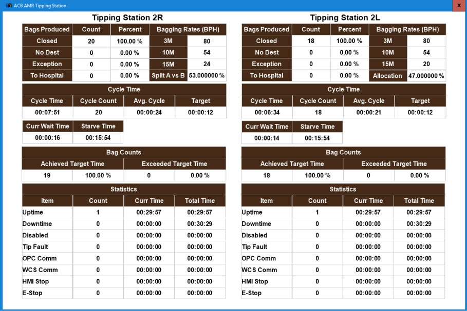

| Procedure ID | proc_open_and_use_tipping_station_screen_tipper_hmi_v1 |
|---|---|
| Title | Open and Use the Tipping Station Screen on the Tipper HMI |
| Procedure Type | operation |
| Primary Role | operator |
| Support Safe | Yes |
| Capability Tags | tipper_station_fault |
| Access Surface | tipper_hmi |
| Audience Roles | operator |
| Failure Pattern Tags | None |
| Validation Status | needs_sme_review |
| Merge Status | source_finalized |
Navigate the Tipper HMI to the “Tipping Station” screen to view bag completion counts, error information, and task duration metrics for the tipping station.
Use when you need to monitor tipping station performance by checking bag completion counts, error information, and how long tasks take on the Tipper HMI.

Responsible role: operator
Instruction:
On the Tipper HMI, press the SMALLS button.
Expected result:
The SMALLS drop-down menu is displayed.
Responsible role: operator
Instruction:
In the drop-down menu, select "ACB".
Expected result:
The options list updates to show ACB options.
Responsible role: operator
Instruction:
From the options list, select "ACB1 - AMT TT".
Expected result:
The system is set to the “ACB1 - AMT TT” context so the tipper button can open the Tipping Station screen.
Responsible role: operator
Instruction:
Press the tipper button on the right side of the screen.
Expected result:
The “Tipping Station” screen opens.
Stop or Escalate If:
Responsible role: operator
Instruction:
Verify the “Tipping Station” screen is displayed and check that it shows: (1) how many bags are completed, (2) errors, and (3) how long tasks take.
Expected result:
The “Tipping Station” screen displays bag completion information, error information, and task duration/timers.